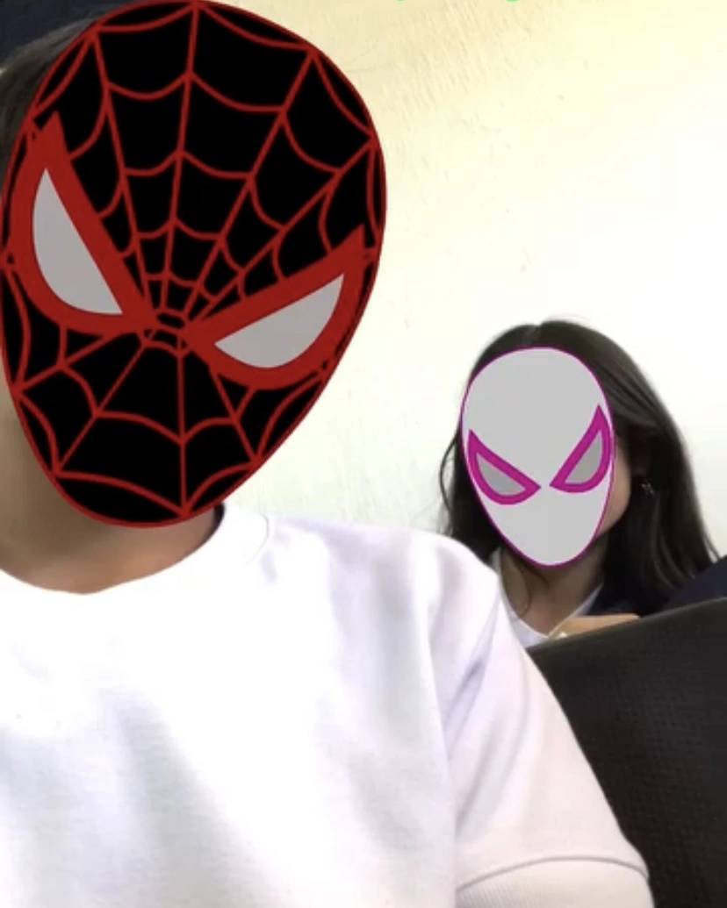
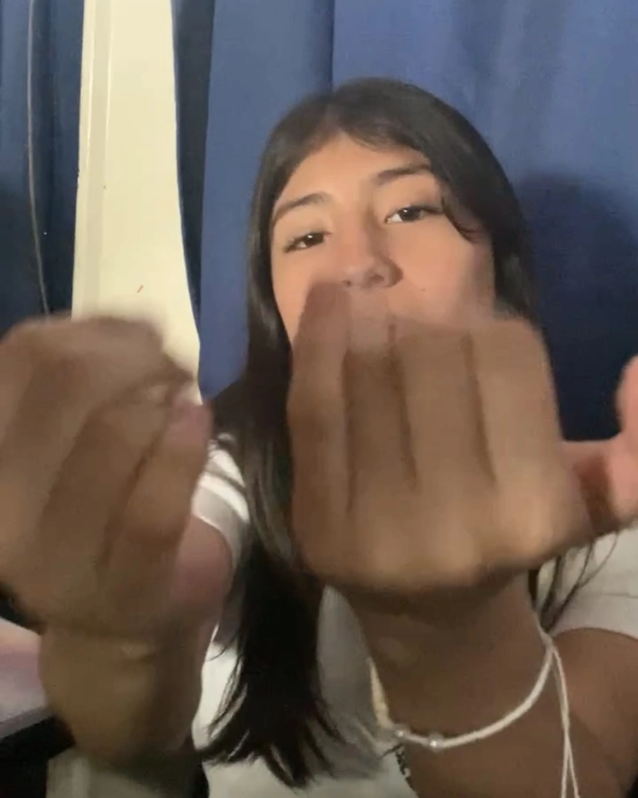
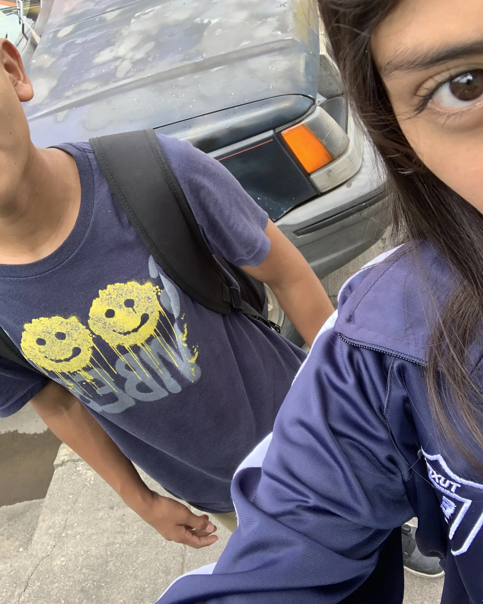

Hay cosas que no se olvidan así que hice esto para ti.
Sé que hoy es un día especial para ti, y aunque ahora estemos lejos, no quería solo mandarte un mensaje felicitandote.
Queria hacer algo un poco mas creativo, o algo diferente, algo con lo que me pudiera expresar hacia ti.
Así que si estás viendo esto, mi objetivo es hacerte ver que aún hay cosas que valen la pena recordar.
Todo empezó cuando decidí inscribirme a la secundaria de tuxpan sin imaginar que ahí iba a encontrarte. Al principio estaba en otro grupo en el A, pero después de unas semanas me cambiaron, y fue justo en ese momento cuando te vi por primera vez, sentada con Michell, eras chaparrita, con tu cabello castaño y ese fleco tan tuyo, y tus ojos que hicieron que algo en mí despertara sin saber exactamente qué era.
Desde ese día empecé a intentar acercarme poco a poco, buscando cualquier excusa para hablar contigo hasta que logramos ser amigos, y con el tiempo eso se volvió algo más importante para mí. Recuerdo cuando me armé de valor para decirte lo que sentía y me dijiste que no, lo entendí aunque no dejé de sentirlo, y fue tiempo después cuando volví a intentarlo y esta vez dijiste que sí. Aún tengo muy presentes esos momentos, el primer beso, el primer abrazo, tu sonrisa, y esas ganas de que el fin de semana pasara rápido solo para volver a la escuela y verte otra vez, porque lo único que quería era sacarte una sonrisa.
El tiempo pasó y las cosas cambiaron, terminamos y poco a poco dejamos de hablar, hasta que llegó el momento en el que tuve que cambiarme de escuela y de estado, irme sin siquiera poder despedirme de ti como me hubiera gustado, sin un último abrazo. Y aun así, después de todo este tiempo, hay recuerdos que siguen aquí, cosas que no se olvidan tan fácil, porque aunque ya no estemos en el mismo lugar ni en el mismo momento, fuiste alguien muy importante en mi vida, y eso es algo que nunca va a cambiar.

El Spider-Verse.

Tus bellos ojos.

La ultima que nos tomamos.
Hay cosas que con el tiempo se quedan contigo… canciones, películas, momentos… y sin darme cuenta, muchas de ellas me llevan a ti.
Loving Machine – TV Girl
My Kind of Woman – Mac DeMarco
Lejos De Ti – The Marias
Cuento – Ximena Sariñana
Amor Mio – Frank Sark
Tu Con El – Frankie Ruiz
Virgen – Adolescent's Orquesta
Que Locura Enamorarme De Ti – Eddie Santiago
Yebba's Heartbreak – Drake
Monalisa – La Santa Grifa
Stupid Love Story – Canserbero
3:45 – Rels B
Diario De Una Pasion
No sé exactamente por qué, pero cada una de estas cosas tiene algo que me hace pensar en ti, en lo que sentía cuando estaba contigo… y en lo bonito que fue.
Feliz cumpleaños, Julieta. La verdad espero que te encuentres bien. Tal vez esto no sea algo que esperabas, y puede que suene repetitivo, pero desde la última vez que te pude ver físicamente, hay días en los que incluso me cuesta dormir. Han pasado muchas cosas, he vivido mucho, y a veces me gustaría poder contártelo todo algún día.
No solía ver muchas películas de amor, pero empecé a hacerlo solo para recordar ese sentimiento de cuando estaba a tu lado, y la verdad es algo muy bonito. Aún recuerdo muchas cosas de ti, y no lo digo por exagerar. Escucho a Mac DeMarco por su instrumental y pienso en ti, veo las matemáticas y me acuerdo de ti porque aunque no se te daban tan fácil, siempre te esforzabas, y esa es una de las cualidades que siempre admiré de ti.
Veo la noche y las estrellas y recuerdo esos aretes que usabas, veo el color verde y pienso en ti porque era tu favorito, veo algo relacionado con la nieve y me acuerdo de esos copitos de nieve en tu cabeza, talvez son pequeñas cosas, pero se quedaron conmigo.
La verdad es que extraño una parte de ti, pero más que nada espero que cumplas todas tus metas, que nunca dejes que nadie te diga que no puedes lograr algo, porque eres una excelente persona, como amiga y como novia lo fuiste también. Solo valora bien a quién le das el privilegio de conocer tu verdadero yo.
Solo quería desearte suerte, amor y lo mejor en tu vida. Y quién sabe, tal vez algún día podamos volver a vernos, darte ese abrazo que quedó pendiente y contarte todo lo que ha pasado. Cuídate mucho.
Solo quiero que sepas que te amo, y que te amaré. Fuiste mi primera novia, pero también fuiste alguien con quien aprendí mucho, alguien que dejó una marca en mí que no se borrara.
Tal vez la vida nos llevó por caminos diferentes, pero eso no cambia lo que significaste para mí ni todo lo que viví contigo.
De parte de Daniel… o del Daniel que a veces se queda viendo las estrellas y sigue pensando en ti.